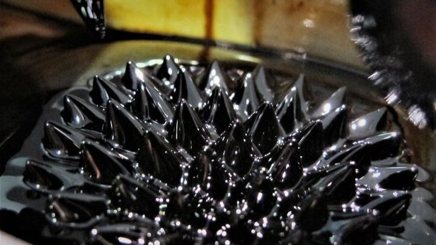

This page will have my opinion and reflection and i'll be talking about overall how good is this and is it worth it or not
Would I suggest using smart materials? Not really, considering the fact that they can get destroyed if constant temperature change happens, meaning they just wouldn't work completely or would barely work, not to mention they cost a lot aswell, however for big projects like a city, i would say yes it is effective because you have the budget to buy it and maintain the materials.
In conclusion, they aren't bad or anything, they're just very expensive, they would be extremely useful in big projects, but for simple projects I think sticking with traditional materials is fine, I think this could completely change the way we see cities and buildings, in everything, we would be able to see a difference with smart materials, they are life changing technology.
